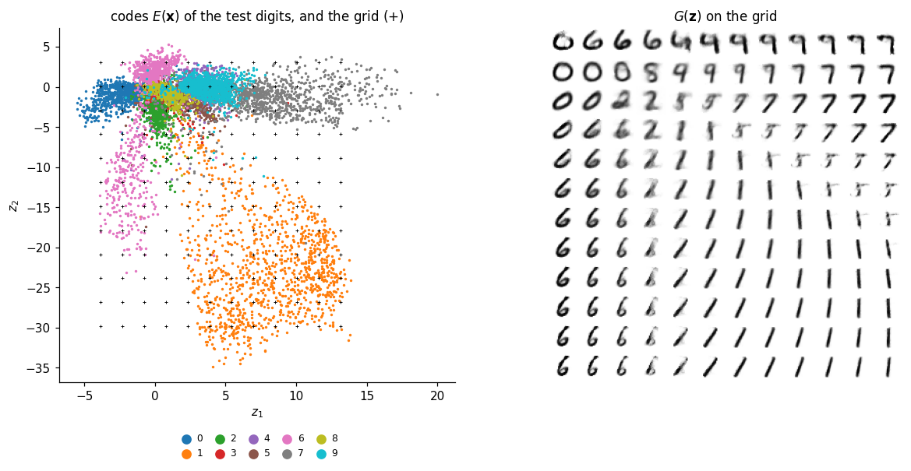
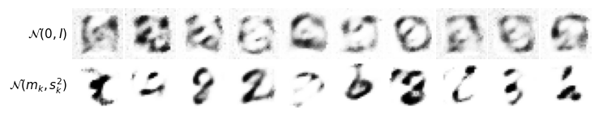
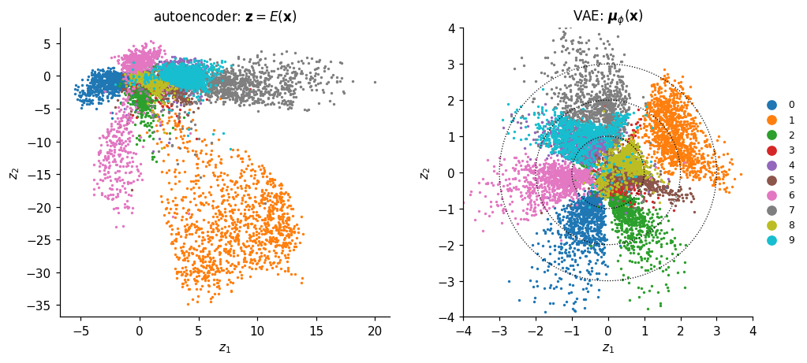
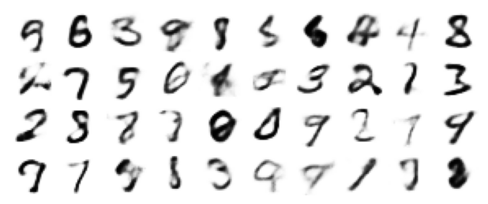
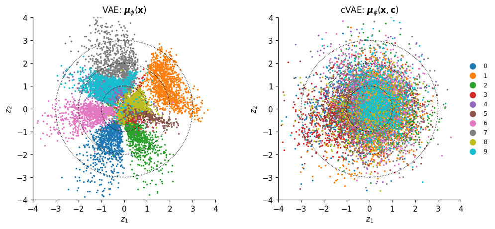
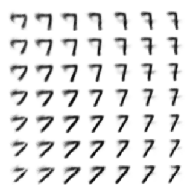

Lab 024 — Generative models: variational and conditional autoencoders
The images \(\mathbf x_1,\dots,\mathbf x_n\) of a data set are samples from an unknown probability distribution \(p(\mathbf x)\). A generative model learns an approximation \(p_\theta(\mathbf x)\) from the samples and draws new samples from it: images that are not in the data set but could have been. In physics the same question reads: can a network learn the Boltzmann distribution of a spin model from Monte Carlo snapshots, and produce new configurations at a chosen temperature? This notebook builds the method on MNIST; the physics follows in Lab 025.
Random latent vectors of an autoencoder. Decoding random latent vectors gives no digits.
Probability, likelihood and maximum likelihood. A coin, and a Gaussian mixture fitted by gradient ascent.
The variational autoencoder (VAE). Encoder \(q_\phi(\mathbf z|\mathbf x)\), reparametrisation trick, the evidence lower bound (ELBO).
The latent space of a VAE. Sampling from \(\mathcal N(0,I)\), interpolation, latent traversals, active dimensions.
Judging generated digits with a classifier. A CNN trained on real MNIST; confusion matrices and class distributions of synthetic data.
The conditional VAE (cVAE). Digits on demand, and a test of the requested digit against the classifier.
Everything is written in JAX: the networks in flax.nnx, the optimiser in optax, one jit-compiled lax.scan per training epoch, explicit random keys. The figures of the Lecture 6 slides are written to ../beamer/figures/gen_*.png, the numbers quoted there to ../beamer/figures/numbers_lab024.json.
How to run this notebook in Google Colab 1. Go to https://colab.research.google.com → File → Upload notebook. The first code cell sets JAX_PLATFORMS=cpu; the networks and numbers of epochs are chosen so that the notebook finishes in about a quarter of an hour on a multi-core CPU. With a GPU runtime you can delete that line and train longer. 2. jax, flax, optax and matplotlib are pre-installed in Colab. 3. MNIST is read from data/MNIST_raw/ (the four *-ubyte.gz files); if they are missing, the notebook downloads them. 4. Run the cells in order: later cells use variables defined earlier.
Code
import osos.environ["JAX_PLATFORMS"] ="cpu"# run JAX on the CPU (set before importing jax)import gzip, json, time, urllib.requestfrom math import combimport numpy as npimport matplotlib.pyplot as pltimport jax, jax.numpy as jnpimport optaximport flaxfrom flax import nnxUJBlue, UJNavy, DSOrange, UJGray ="#005CA7", "#002B5C", "#D35A05", "#5A6270"cmap10 = plt.get_cmap("tab10")plt.rcParams.update({"figure.dpi": 110, "axes.spines.top": False, "axes.spines.right": False,"axes.titlesize": 11, "axes.labelsize": 10, "legend.frameon": False})import osOUT ="figures"; os.makedirs(OUT, exist_ok=True) # slide figuresos.makedirs(OUT, exist_ok=True)def save(fig, name, **kw): fig.savefig(f"{OUT}/{name}", dpi=170, bbox_inches="tight", **kw)def show_grid(imgs, nrow, ncol, name=None, size=0.6, row_labels=None, fontsize=9):"""Draw images (n, 784) as an nrow x ncol grid; optional labels to the left of each row.""" fig, axs = plt.subplots(nrow, ncol, figsize=(ncol * size, nrow * size), squeeze=False)for a, im inzip(axs.ravel(), imgs): a.imshow(np.asarray(im).reshape(28, 28), cmap="gray_r", vmin=0, vmax=1)for a in axs.ravel(): a.set_xticks([]); a.set_yticks([])for s in a.spines.values(): s.set_visible(False)if row_labels isnotNone:for r, lab inenumerate(row_labels): axs[r, 0].set_ylabel(lab, rotation=0, ha="right", va="center", fontsize=fontsize) plt.subplots_adjust(wspace=0.03, hspace=0.03)if name: save(fig, name) plt.show()nums = {} # numbers quoted on the slidest_start = time.time()print("JAX", jax.__version__, "| flax", flax.__version__, "| optax", optax.__version__)print("devices:", jax.devices())
JAX 0.11.0 | flax 0.12.8 | optax 0.2.6
devices: [CpuDevice(id=0)]
0. The data
MNIST: \(28\times28\) grayscale digits, \(60\,000\) for training and \(10\,000\) for testing [LeCun et al., Proc. IEEE 86, 2278 (1998), doi:10.1109/5.726791]. Each image is a vector \(\mathbf x\in[0,1]^{784}\). The raw IDX files are read with gzip and numpy.
Code
MNIST_DIR ="data/MNIST_raw"MNIST_FILES = ["train-images-idx3-ubyte.gz", "train-labels-idx1-ubyte.gz","t10k-images-idx3-ubyte.gz", "t10k-labels-idx1-ubyte.gz"]ifnotall(os.path.exists(f"{MNIST_DIR}/{f}") for f in MNIST_FILES): os.makedirs(MNIST_DIR, exist_ok=True)for f in MNIST_FILES: urllib.request.urlretrieve(f"https://storage.googleapis.com/cvdf-datasets/mnist/{f}", f"{MNIST_DIR}/{f}")def read_idx(path):with gzip.open(path, "rb") as fh: data = fh.read() ndim = data[3] # 3 for images, 1 for labels shape = np.frombuffer(data[4:4+4* ndim], dtype=">i4") # big-endian int32 sizesreturn np.frombuffer(data[4+4* ndim:], dtype=np.uint8).reshape(shape)Xtr = read_idx(f"{MNIST_DIR}/{MNIST_FILES[0]}").reshape(-1, 784).astype(np.float32) /255.0ytr = read_idx(f"{MNIST_DIR}/{MNIST_FILES[1]}").astype(np.int32)Xte = read_idx(f"{MNIST_DIR}/{MNIST_FILES[2]}").reshape(-1, 784).astype(np.float32) /255.0yte = read_idx(f"{MNIST_DIR}/{MNIST_FILES[3]}").astype(np.int32)Xtr_d, ytr_d, Xte_d = jnp.asarray(Xtr), jnp.asarray(ytr), jnp.asarray(Xte)Ctr_d = jax.nn.one_hot(ytr_d, 10) # one-hot labels, used by the cVAEprint("train", Xtr.shape, "test", Xte.shape)
train (60000, 784) test (10000, 784)
One training function for every model
All models below are trained by the same function. A model is split by nnx.split into its static structure (graphdef) and its parameters; the loss is a pure function of the parameters, a minibatch and a random key; jax.value_and_grad gives the loss and the gradient; optax.adam updates the parameters; jax.lax.scan runs over all minibatches of one epoch, and jax.jit compiles the whole epoch into one XLA program.
loss_fn(model, batch, key) returns the loss and a dictionary of numbers to monitor. The key is split once per minibatch, so that every minibatch gets fresh random numbers (the VAE needs them) and the whole run is fixed by one seed.
Code
def train(model, loss_fn, data, epochs, seed, batch_size=128, lr=1e-3, log_every=5):"""Adam; one jit-compiled lax.scan per epoch. data: tuple of arrays with the same first dimension.""" graphdef, params, rest = nnx.split(model, nnx.Param, ...) tx = optax.adam(lr) opt_state = tx.init(params) n = data[0].shape[0] n_batches = n // batch_sizedef batch_loss(params, batch, key):return loss_fn(nnx.merge(graphdef, params, rest), batch, key)@jax.jitdef train_epoch(params, opt_state, data, key): k_perm, k_steps = jax.random.split(key) idx = jax.random.permutation(k_perm, n)[: n_batches * batch_size].reshape(n_batches, batch_size) keys = jax.random.split(k_steps, n_batches)def step(carry, inp): params, opt_state = carry batch_idx, k = inp batch =tuple(a[batch_idx] for a in data) (loss, aux), grads = jax.value_and_grad(batch_loss, has_aux=True)(params, batch, k) updates, opt_state = tx.update(grads, opt_state, params)return (optax.apply_updates(params, updates), opt_state), aux (params, opt_state), aux = jax.lax.scan(step, (params, opt_state), (idx, keys))return params, opt_state, jax.tree.map(jnp.mean, aux) key, history, t0 = jax.random.key(seed), [], time.time()for ep inrange(epochs): key, sub = jax.random.split(key) params, opt_state, aux = train_epoch(params, opt_state, data, sub) history.append({k: float(v) for k, v in aux.items()})if ep ==0or (ep +1) % log_every ==0or ep +1== epochs:print(f" epoch {ep +1:3d}: "+" ".join(f"{k}{v:.4f}"for k, v in history[-1].items())+f" ({time.time() - t0:5.1f} s)") nnx.update(model, params)return model, {k: np.array([h[k] for h in history]) for k in history[0]}def in_chunks(fn, *arrays, chunk=2000):"""Apply fn to chunks of the arrays and concatenate (keeps the memory small).""" outs = [fn(*(a[i:i + chunk] for a in arrays)) for i inrange(0, arrays[0].shape[0], chunk)]return jax.tree.map(lambda*xs: np.concatenate([np.asarray(x) for x in xs]), *outs)
1. Random latent vectors of an autoencoder
Recall Lab 017: an encoder \(E\) maps an image to a latent vector \(\mathbf z=E(\mathbf x)\in\mathbb R^d\), a decoder \(G\) maps it back, \(\hat{\mathbf x}=G(\mathbf z)\), and both are trained to minimise the reconstruction error \(\frac1D\lVert\mathbf x-\hat{\mathbf x}\rVert^2\). The decoder turns any\(\mathbf z\) into an image. Can it produce new digits if we feed it latent vectors that no training image was mapped to?
We train the dense autoencoder of Lab 017 (\(784\to256\to64\to d\) and back, ReLU, sigmoid output; 12 epochs) with \(d=2\), so that the latent plane can be drawn, and with \(d=16\). Shapes for a minibatch of \(B\) images: \(\mathbf x\): \((B,784)\)\(\to\)\((B,256)\to(B,64)\to\mathbf z\): \((B,d)\)\(\to(B,64)\to(B,256)\to\hat{\mathbf x}\): \((B,784)\). The loss is the mean squared error over pixels and images.
Code
class DenseAE(nnx.Module):def__init__(self, d, D=784, hidden=(256, 64), *, rngs): h1, h2 = hiddenself.enc = nnx.List([nnx.Linear(D, h1, rngs=rngs), nnx.Linear(h1, h2, rngs=rngs), nnx.Linear(h2, d, rngs=rngs)])self.dec = nnx.List([nnx.Linear(d, h2, rngs=rngs), nnx.Linear(h2, h1, rngs=rngs), nnx.Linear(h1, D, rngs=rngs)])def encode(self, x):for layer inself.enc[:-1]: x = nnx.relu(layer(x))returnself.enc[-1](x)def decode(self, z):for layer inself.dec[:-1]: z = nnx.relu(layer(z))return nnx.sigmoid(self.dec[-1](z))def ae_loss(model, batch, key): (x,) = batch mse = jnp.mean((model.decode(model.encode(x)) - x) **2)return mse, {"mse": mse}print("autoencoder, d = 2"); ae2, _ = train(DenseAE(2, rngs=nnx.Rngs(0)), ae_loss, (Xtr_d,), epochs=12, seed=0, batch_size=256)print("autoencoder, d = 16"); ae16, _ = train(DenseAE(16, rngs=nnx.Rngs(1)), ae_loss, (Xtr_d,), epochs=12, seed=1, batch_size=256)ae_encode = nnx.jit(lambda m, x: m.encode(x))ae_decode = nnx.jit(lambda m, z: m.decode(z))Z_ae2 = np.asarray(ae_encode(ae2, Xte_d)) # (10000, 2)assert Z_ae2.shape == (10000, 2)Z_ae16_tr = np.asarray(ae_encode(ae16, Xtr_d))# one test digit and its reconstruction by the d = 16 autoencoder, for the diagram of the slidesx_out = np.asarray(ae_decode(ae16, ae_encode(ae16, Xte_d[:1])))[0]for arr, name in [(Xte[0], "gen_ae_in.png"), (x_out, "gen_ae_out.png")]: fig = plt.figure(figsize=(2, 2)); plt.imshow(arr.reshape(28, 28), cmap="gray_r"); plt.axis("off") save(fig, name, pad_inches=0.02); plt.close(fig)
The latent codes \(\mathbf z=E(\mathbf x)\) of the test digits, coloured by the true digit (used only for plotting), and the images \(G(\mathbf z)\) decoded from a regular \(12\times12\) grid of points that covers the codes (from the 1st to the 99th percentile of each coordinate).
Code
lo, hi = np.percentile(Z_ae2, 1, axis=0), np.percentile(Z_ae2, 99, axis=0)g1, g2 = np.linspace(lo[0], hi[0], 12), np.linspace(hi[1], lo[1], 12)z_grid = np.array([[a, b] for b in g2 for a in g1], dtype=np.float32)imgs_ae_grid = np.asarray(ae_decode(ae2, jnp.asarray(z_grid)))fig = plt.figure(figsize=(10.5, 4.6))ax = fig.add_axes([0.0, 0.05, 0.44, 0.9])for d inrange(10): m = yte == d ax.scatter(Z_ae2[m, 0], Z_ae2[m, 1], s=1.5, color=cmap10(d), label=str(d), rasterized=True)ax.scatter(z_grid[:, 0], z_grid[:, 1], s=6, marker="+", color="k", lw=0.6)ax.set_xlabel("$z_1$"); ax.set_ylabel("$z_2$"); ax.set_title("codes $E(\\mathbf{x})$ of the test digits, and the grid (+)")ax.legend(markerscale=6, fontsize=8, ncol=5, loc="upper center", bbox_to_anchor=(0.5, -0.12), handletextpad=0.1, columnspacing=0.8)big = np.ones((12*29, 12*29))for k, im inenumerate(imgs_ae_grid): r, c =divmod(k, 12) big[r *29:r *29+28, c *29:c *29+28] =1- im.reshape(28, 28)ax2 = fig.add_axes([0.5, 0.05, 0.48, 0.9])ax2.imshow(big, cmap="gray", vmin=0, vmax=1); ax2.set_xticks([]); ax2.set_yticks([])for s in ax2.spines.values(): s.set_visible(False)ax2.set_title("$G(\\mathbf{z})$ on the grid")save(fig, "gen_ae_holes.png"); plt.show()

Many grid points decode to digits, but between and around the clusters of codes there are regions that decode to blurred shapes that are no digit, and the codes of different digits have very different spreads. Nothing in the training tells us where the “valid” latent vectors are.
Random latent vectors in 16 dimensions
With \(d=16\) we cannot look at the latent space. We draw random latent vectors in two ways: from \(\mathcal N(0,I)\), and from a Gaussian fitted to the training codes, coordinate by coordinate: \(z_k\sim\mathcal N(m_k,s_k^2)\) with \(m_k\), \(s_k\) the mean and standard deviation of \(E(\mathbf x)_k\) over the training set.
standard deviations of the 16 code coordinates: [3.47 1.99 1.8 2.42 2.34 2.76 2.69 3.33 2.6 2.43 3.3 2.84 3.57 3.05
2.27 2.66]

Neither works. The codes of an autoencoder do not fill a simple region: they lie on a thin, curved set, and a random point of \(\mathbb R^{16}\), even one with the right mean and spread in every coordinate, almost never falls on it. Section 5 measures this with a classifier. To generate we need a latent space whose distribution we know and can sample. This is what the variational autoencoder adds.
Try it. Decode the midpoint \(\frac12\big(E(\mathbf x_a)+E(\mathbf x_b)\big)\) of the codes of two different test digits with the \(d=16\) autoencoder. Is it a digit?
2. Probability, likelihood, maximum likelihood
A model \(p(x\,|\,\theta)\) gives the probability of data \(x\) when the parameters are \(\theta\). The same formula is read in two ways:
probability:\(\theta\) fixed, \(x\) varies. Summed over all outcomes \(x\) it gives 1.
likelihood: the observed data fixed, \(\theta\) varies, \(L(\theta)=p(x_{\rm obs}\,|\,\theta)\). It is a function of \(\theta\), not a probability distribution over \(\theta\).
A coin with probability \(\theta\) of heads, tossed 10 times: \(p(k\,|\,\theta)=\binom{10}{k}\theta^k(1-\theta)^{10-k}\). We observed \(k=7\).
Code
ks, th = np.arange(11), np.linspace(0, 1, 401)p_k = np.array([comb(10, k) *0.5**10for k in ks])L_th = comb(10, 7) * th **7* (1- th) **3nums["coin_p7_given_half"] =float(p_k[7])nums["coin_theta_ml"] =float(th[np.argmax(L_th)])nums["coin_L_integral"] =float(np.trapezoid(L_th, th))fig, axs = plt.subplots(1, 2, figsize=(9.5, 3.0))axs[0].bar(ks, p_k, color=UJBlue); axs[0].bar([7], [p_k[7]], color=DSOrange)axs[0].set_xlabel("number of heads $k$"); axs[0].set_title(r"$p(k\,|\,\theta = 0.5)$, $\sum_k p = 1$")axs[1].plot(th, L_th, color=DSOrange, lw=2.2); axs[1].axvline(0.7, color="k", ls=":", lw=1)axs[1].set_xlabel(r"$\theta$"); axs[1].set_title(r"$L(\theta) = p(k = 7\,|\,\theta)$")plt.tight_layout(); save(fig, "gen_prob_vs_likelihood.png"); plt.show()print(f"p(7 | 0.5) = {nums['coin_p7_given_half']:.3f}; argmax L = {nums['coin_theta_ml']:.3f}; "f"integral of L over theta = {nums['coin_L_integral']:.4f} (= 1/11)")
p(7 | 0.5) = 0.117; argmax L = 0.700; integral of L over theta = 0.0909 (= 1/11)
Maximum likelihood
Data \(\mathbf x_1,\dots,\mathbf x_n\), independent samples of an unknown \(p(\mathbf x)\); a model \(p_\theta(\mathbf x)\). The likelihood of all the data and its logarithm: \[L(\theta)=\prod_{i=1}^n p_\theta(\mathbf x_i),\qquad \ell(\theta)=\sum_{i=1}^n\log p_\theta(\mathbf x_i),\qquad \theta^*=\arg\max_\theta\ell(\theta).\] For \(n\to\infty\), \(\frac1n\ell(\theta)\to\mathbb E_{p}[\log p_\theta]=-H(p)-\mathrm{KL}(p\,\|\,p_\theta)\): maximum likelihood minimises the Kullback–Leibler divergence between the data distribution and the model. The cross-entropy loss of classification is minus a log-likelihood.
Example: 1500 points in 2D from three groups. Two models: one Gaussian, for which \(\theta^*\) is the sample mean and the sample covariance (with \(1/n\)), and a mixture of three Gaussians, \[p_\theta(\mathbf x)=\sum_{k=1}^{3}\pi_k\,\mathcal N(\mathbf x;\boldsymbol\mu_k,\Sigma_k),\] which has no closed-form maximum. We maximise \(\ell\) by gradient ascent, exactly as we train a network. Constraints are built into the parametrisation: \(\pi=\mathrm{softmax}(\mathbf a)\), and \(\Sigma_k=L_kL_k^\top\) with \(L_k\) lower-triangular and a positive diagonal \(e^{(\cdot)}\). Then we draw new points from each fitted model.
one Gaussian: gradient ascent mean [ 0.579 -0.061] | sample mean [ 0.579 -0.061]
gradient ascent cov [[7.144000053405762, -0.6740000247955322], [-0.6740000247955322, 5.1579999923706055]] | sample cov (1/n) [[7.144, -0.674], [-0.674, 5.158]]
mean log-likelihood per point: one Gaussian -4.635, mixture of three -3.679
Gradient ascent reproduces the closed-form answer for one Gaussian. The mixture assigns the data a higher likelihood, and its samples (orange) look like the data; the single Gaussian puts probability where there are no data. For images no formula like this can be written by hand: a neural network must represent \(p_\theta(\mathbf x)\).
Try it. Fit mixtures with \(K=2,3,6,12\) and evaluate \(\ell/n\) on the training points and on 1500 fresh points from the same three groups. When does a larger model stop helping?
3. The variational autoencoder
3.1 A latent-variable model, and the integral we cannot compute
We want a model \(p_\theta(\mathbf x)\) that we can sample. Build it in two stages:
draw a latent vector from a fixed, simple prior, \(\mathbf z\sim p(\mathbf z)=\mathcal N(0,I_d)\);
let a neural network, the decoder\(G_\theta:\mathbb R^d\to\mathbb R^{784}\), turn it into a distribution over images. For pixels in \([0,1]\) we use independent Bernoulli pixels with probabilities \(\hat{\mathbf x}=\sigma(G_\theta(\mathbf z))\) (\(\sigma\): the logistic sigmoid, applied to each of the 784 outputs): \[p_\theta(\mathbf x|\mathbf z)=\prod_{j=1}^{784}\hat x_j^{\,x_j}(1-\hat x_j)^{1-x_j},\qquad -\log p_\theta(\mathbf x|\mathbf z)=\underbrace{-\sum_{j=1}^{784}\big[x_j\log\hat x_j+(1-x_j)\log(1-\hat x_j)\big]}_{\mathrm{BCE}(\mathbf x,\hat{\mathbf x})}.\] (MNIST pixels are grey values, not 0/1; the binary cross-entropy is still a valid loss and is the standard choice.)
Sampling is easy: draw \(\mathbf z\), decode. The likelihood of an image is the marginal\[\log p_\theta(\mathbf x)=\log\int p_\theta(\mathbf x|\mathbf z)\,p(\mathbf z)\,d\mathbf z .\] This integral over \(\mathbb R^d\) has no closed form, and estimating it by sampling \(\mathbf z\) from the prior fails in practice: for a given image only a tiny region of latent space produces it, and almost all prior samples contribute nothing. (We measure this in Section 3.8.) So we cannot maximise \(\log p_\theta(\mathbf x)\) directly.
3.2 The evidence lower bound (ELBO)
Tools used below.
Expectation over a distribution \(q\): \(\mathbb E_{q}[f]=\int q(\mathbf z)\,f(\mathbf z)\,d\mathbf z\); estimated by sampling, \(\mathbb E_q[f]\approx\frac1M\sum_m f(\mathbf z_m)\) with \(\mathbf z_m\sim q\).
Gaussian density in one dimension: \(\mathcal N(z;\mu,\sigma^2)=\frac{1}{\sqrt{2\pi\sigma^2}}e^{-(z-\mu)^2/2\sigma^2}\); a diagonal Gaussian in \(d\) dimensions is the product of \(d\) of them.
Kullback–Leibler divergence: \(\mathrm{KL}(q\,\|\,p)=\mathbb E_q\big[\log\frac{q}{p}\big]\). It is \(\ge0\), with equality only for \(q=p\). Proof with Jensen’s inequality for the concave logarithm, \(\mathbb E[\log Y]\le\log\mathbb E[Y]\): \(-\mathrm{KL}(q\|p)=\mathbb E_q\big[\log\frac pq\big]\le\log\mathbb E_q\big[\frac pq\big]=\log\int p\,d\mathbf z=\log1=0\).
Introduce an encoder. A second network proposes, for each image, the latent vectors that could have produced it: \[q_\phi(\mathbf z|\mathbf x)=\mathcal N\big(\boldsymbol\mu_\phi(\mathbf x),\,\mathrm{diag}\,\boldsymbol\sigma_\phi^2(\mathbf x)\big),\] a Gaussian with \(d\) means and \(d\) variances, all outputs of the network.
Step 1: Bayes’ rule. For every \(\mathbf z\), \(p_\theta(\mathbf x)=p_\theta(\mathbf x|\mathbf z)\,p(\mathbf z)/p_\theta(\mathbf z|\mathbf x)\), where \(p_\theta(\mathbf z|\mathbf x)\) is the true posterior. Take the logarithm and multiply and divide by \(q_\phi(\mathbf z|\mathbf x)\) inside: \[\log p_\theta(\mathbf x)=\log p_\theta(\mathbf x|\mathbf z)-\log\frac{q_\phi(\mathbf z|\mathbf x)}{p(\mathbf z)}+\log\frac{q_\phi(\mathbf z|\mathbf x)}{p_\theta(\mathbf z|\mathbf x)} .\]
Step 2: average over \(q_\phi(\mathbf z|\mathbf x)\). The left-hand side does not depend on \(\mathbf z\), so it is unchanged; on the right, the averages of the last two terms are Kullback–Leibler divergences, \(\mathrm{KL}(q\|p)=\mathbb E_q[\log q/p]\): \[\log p_\theta(\mathbf x)=\underbrace{\mathbb E_{q_\phi(\mathbf z|\mathbf x)}\big[\log p_\theta(\mathbf x|\mathbf z)\big]-\mathrm{KL}\big(q_\phi(\mathbf z|\mathbf x)\,\|\,p(\mathbf z)\big)}_{\mathrm{ELBO}(\theta,\phi;\,\mathbf x)}\;+\;\mathrm{KL}\big(q_\phi(\mathbf z|\mathbf x)\,\|\,p_\theta(\mathbf z|\mathbf x)\big).\]
Step 3: the bound. A KL divergence is never negative (Gibbs’ inequality), so \[\log p_\theta(\mathbf x)\ \ge\ \mathrm{ELBO}(\theta,\phi;\mathbf x),\] the Evidence Lower BOund (“evidence” = \(p_\theta(\mathbf x)\)). The gap is \(\mathrm{KL}(q_\phi\,\|\,p_\theta(\mathbf z|\mathbf x))\): the bound is tight when the encoder equals the true posterior. Maximising the ELBO over \(\theta\) and \(\phi\) therefore does two things at once: it pushes \(\log p_\theta(\mathbf x)\) up (approximate maximum likelihood) and it pushes \(q_\phi\) towards the true posterior. Everything in the ELBO is computable: an average over a Gaussian we can sample, and a KL between two Gaussians.
The two terms.
\(\mathbb E_q[\log p_\theta(\mathbf x|\mathbf z)]=-\mathbb E_q\,\mathrm{BCE}(\mathbf x,\hat{\mathbf x})\): reconstruction. Latent vectors drawn from the encoder’s cloud must decode back to \(\mathbf x\). Alone, it would shrink each cloud to a point and move the clouds apart: an ordinary autoencoder.
\(-\mathrm{KL}(q_\phi(\mathbf z|\mathbf x)\,\|\,p(\mathbf z))\): stay close to the prior. Every cloud is pulled towards \(\mathcal N(0,I)\). The clouds of all images then overlap and fill the prior without holes, and this is what makes a fresh \(\mathbf z\sim\mathcal N(0,I)\) decode to a valid image.
Physicist’s reading: the variational free energy. In statistical mechanics, a system with states \(\mathbf z\) of energy \(E(\mathbf z)\) at temperature \(T\) is in the Boltzmann distribution \(e^{-E(\mathbf z)/T}/Z\), with partition function \(Z=\int e^{-E/T}d\mathbf z\) and free energy \(F=-T\log Z\). For any trial distribution \(q\) one defines \(F[q]=\langle E\rangle_q-T\,S[q]\), with the entropy \(S[q]=-\mathbb E_q\log q\); it is smallest, and equal to \(F\), for the Boltzmann distribution. Now define an “energy” of the latent configuration \(\mathbf z\) for a fixed image, \(E(\mathbf z)=-\log\big[p_\theta(\mathbf x|\mathbf z)p(\mathbf z)\big]\), at temperature \(T=1\). Its Boltzmann distribution is the posterior, \(e^{-E(\mathbf z)}/Z=p_\theta(\mathbf z|\mathbf x)\), with partition function \(Z=\int e^{-E}d\mathbf z=p_\theta(\mathbf x)\) and free energy \(F=-\log Z=-\log p_\theta(\mathbf x)\). For a trial distribution \(q\), the variational free energy is \[F[q]=\langle E\rangle_q-S[q],\qquad S[q]=-\mathbb E_q\log q ,\] and inserting \(E=-\log Z-\log(e^{-E}/Z)\) into \(\langle E\rangle_q\) gives \(F[q]=F+\mathrm{KL}(q\,\|\,e^{-E}/Z)\ge F\): the Gibbs–Bogoliubov inequality behind mean-field theory. Comparing: \(F[q]=-\mathrm{ELBO}\). Training a VAE is minimising a variational free energy, with a Gaussian trial distribution produced by a network for each image.
3.3 The VAE loss
Per image we minimise \(-\mathrm{ELBO}\); with one sample of \(\mathbf z\) per image (Section 3.5) and the closed-form KL (Section 3.4): \[\mathcal L(\mathbf x)=\mathrm{BCE}\big(\mathbf x,\sigma(G_\theta(\mathbf z))\big)+\tfrac12\sum_{k=1}^{d}\big(\mu_k^2+\sigma_k^2-\ln\sigma_k^2-1\big),\qquad\mathbf z\sim q_\phi(\mathbf z|\mathbf x),\] averaged over a minibatch. Units: nats per image.
References: D. P. Kingma, M. Welling, Auto-Encoding Variational Bayes, ICLR 2014, arXiv:1312.6114; D. J. Rezende, S. Mohamed, D. Wierstra, Stochastic Backpropagation and Approximate Inference in Deep Generative Models, ICML 2014, PMLR 32, 1278; review: D. P. Kingma, M. Welling, An Introduction to Variational Autoencoders, Found. Trends Mach. Learn. 12, 307 (2019), doi:10.1561/2200000056.
3.4 The KL divergence between two Gaussians, in closed form
For one latent coordinate, \(q=\mathcal N(\mu,\sigma^2)\) and \(p=\mathcal N(0,1)\): \[\log q(z)=-\tfrac12\log(2\pi\sigma^2)-\frac{(z-\mu)^2}{2\sigma^2},\qquad \log p(z)=-\tfrac12\log(2\pi)-\frac{z^2}{2}.\] Average the difference over \(z\sim q\), using \(\mathbb E_q[(z-\mu)^2]=\sigma^2\) and \(\mathbb E_q[z^2]=\mu^2+\sigma^2\): \[\mathrm{KL}(q\,\|\,p)=\mathbb E_q[\log q-\log p]=-\tfrac12\log\sigma^2-\tfrac12+\tfrac12(\mu^2+\sigma^2)=\tfrac12\big(\mu^2+\sigma^2-\ln\sigma^2-1\big).\] For a diagonal Gaussian in \(d\) dimensions, \(\log q\) and \(\log p\) are sums over coordinates, so the KL is the sum of \(d\) such terms. It is zero only for \(\mu=0\), \(\sigma=1\). The encoder outputs \(\log\sigma^2\) rather than \(\sigma\): any real number is allowed, and \(\sigma^2=e^{\log\sigma^2}>0\) automatically.
Check. The closed form against a Monte Carlo estimate \(\frac1M\sum_m[\log q(z_m)-\log p(z_m)]\) with \(M=10^6\) samples \(z_m\sim q\).
Code
def kl_per_dim(mu, logvar):"""KL( N(mu, sigma^2) || N(0, 1) ) for every latent coordinate; sigma^2 = exp(logvar). Same shape as mu."""return0.5* (mu **2+ jnp.exp(logvar) - logvar -1)def log_normal(z, mu, logvar):"""log N(z; mu, sigma^2), elementwise."""return-0.5* (jnp.log(2* jnp.pi) + logvar + (z - mu) **2/ jnp.exp(logvar))for mu_t, sigma_t in [(0.0, 1.0), (1.5, 0.5), (-0.3, 2.0)]: z = mu_t + sigma_t * jax.random.normal(jax.random.key(0), (1_000_000,)) # samples of q lv = jnp.log(sigma_t **2) kl_mc = jnp.mean(log_normal(z, mu_t, lv) - log_normal(z, 0.0, 0.0)) kl_cf = kl_per_dim(jnp.asarray(mu_t), lv)print(f"mu = {mu_t:5.2f}, sigma = {sigma_t:4.2f}: KL closed form = {float(kl_cf):.4f} KL Monte Carlo = {float(kl_mc):.4f}")assertabs(float(kl_cf) -float(kl_mc)) <5e-3
mu = 0.00, sigma = 1.00: KL closed form = 0.0000 KL Monte Carlo = 0.0000
mu = 1.50, sigma = 0.50: KL closed form = 1.4431 KL Monte Carlo = 1.4441
mu = -0.30, sigma = 2.00: KL closed form = 0.8519 KL Monte Carlo = 0.8484
3.5 The reparametrisation trick
The reconstruction term is an average over \(q_\phi\); we estimate it with one sample \(\mathbf z\sim q_\phi(\mathbf z|\mathbf x)\) per image (the average over the minibatch and over training steps does the rest). The loss then depends on \(\phi\) through a random draw. A sampling routine is not a differentiable function of \(\boldsymbol\mu,\boldsymbol\sigma\): if we draw \(\mathbf z\) and then change \(\boldsymbol\mu\) slightly, there is no rule that says how this particular \(\mathbf z\) should move, so backpropagation cannot pass from the decoder into the encoder.
The fix: write the same random variable as a deterministic function of the parameters and of a parameter-free noise, \[\mathbf z=\boldsymbol\mu_\phi(\mathbf x)+\boldsymbol\sigma_\phi(\mathbf x)\odot\boldsymbol\varepsilon,\qquad\boldsymbol\varepsilon\sim\mathcal N(0,I),\qquad\boldsymbol\sigma=e^{\frac12\log\boldsymbol\sigma^2}.\]\(\mathbf z\) has exactly the distribution \(\mathcal N(\boldsymbol\mu,\mathrm{diag}\,\boldsymbol\sigma^2)\), but now \(\partial z_k/\partial\mu_k=1\), \(\partial z_k/\partial\sigma_k=\varepsilon_k\), and for any function \(f\)\[\nabla_{\mu,\sigma}\,\mathbb E_{\mathbf z\sim q}[f(\mathbf z)]=\mathbb E_{\boldsymbol\varepsilon}\big[\nabla_{\mu,\sigma}f(\boldsymbol\mu+\boldsymbol\sigma\odot\boldsymbol\varepsilon)\big],\] an average of ordinary gradients that backpropagation computes. In JAX \(\boldsymbol\varepsilon\) is drawn from an explicit key, jax.random.normal(key, mu.shape), and jax.grad differentiates through \(\boldsymbol\mu+\boldsymbol\sigma\odot\boldsymbol\varepsilon\).
Check. For \(f(z)=z^2\) we know the answer: \(\mathbb E_q[z^2]=\mu^2+\sigma^2\), so \(\partial/\partial\mu=2\mu\) and \(\partial/\partial\sigma=2\sigma\). We compare with jax.grad of the reparametrised Monte Carlo average.
The decoder returns logits, not probabilities: optax.sigmoid_binary_cross_entropy(logits, x) computes the BCE from the logits in a numerically stable way (no \(\log 0\) when a sigmoid saturates). The sigmoid is applied only when we want to look at the images.
The VAE class takes an optional condition cond (the number \(C\) of extra inputs), so that the conditional VAE of Section 6 is the same class.
Code
class VAE(nnx.Module):"""Dense (conditional) VAE. encoder: [x, c] (B, 784 + C) -> 400 -> 200 -> mu (B, d), logvar (B, d) decoder: [z, c] (B, d + C) -> 200 -> 400 -> pixel logits (B, 784)"""def__init__(self, d, cond=0, D=784, hidden=(400, 200), *, rngs): h1, h2 = hiddenself.d, self.cond = d, condself.enc = nnx.List([nnx.Linear(D + cond, h1, rngs=rngs), nnx.Linear(h1, h2, rngs=rngs)])self.mu = nnx.Linear(h2, d, rngs=rngs) # head 1: the meansself.logvar = nnx.Linear(h2, d, rngs=rngs) # head 2: log sigma^2, any real numberself.dec = nnx.List([nnx.Linear(d + cond, h2, rngs=rngs), nnx.Linear(h2, h1, rngs=rngs), nnx.Linear(h1, D, rngs=rngs)])def encode(self, x, c=None):"""q_phi(z | x [, c]): returns (mu, logvar), each (B, d).""" h = x if c isNoneelse jnp.concatenate([x, c], axis=-1) # (B, 784 + C)for layer inself.enc: h = nnx.relu(layer(h))returnself.mu(h), self.logvar(h)def decode(self, z, c=None):"""G_theta(z [, c]): pixel logits (B, 784); sigmoid(logits) are the Bernoulli probabilities.""" h = z if c isNoneelse jnp.concatenate([z, c], axis=-1) # (B, d + C)for layer inself.dec[:-1]: h = nnx.relu(layer(h))returnself.dec[-1](h)def reparametrise(mu, logvar, key):"""z = mu + sigma * eps, eps ~ N(0, I); the only random step of the VAE.""" eps = jax.random.normal(key, mu.shape)return mu + jnp.exp(0.5* logvar) * epsdef vae_loss(model, batch, key):"""-ELBO per image, averaged over the minibatch. batch = (x,) for the VAE, (x, c) for the cVAE.""" x, c = batch iflen(batch) ==2else (batch[0], None) mu, logvar = model.encode(x, c) # (B, d), (B, d) z = reparametrise(mu, logvar, key) # (B, d): one sample per image rec = optax.sigmoid_binary_cross_entropy(model.decode(z, c), x).sum(axis=-1).mean() # sum over pixels, mean over images kl = kl_per_dim(mu, logvar).sum(axis=-1).mean() # sum over latent coordinates, mean over imagesreturn rec + kl, {"loss": rec + kl, "rec": rec, "kl": kl}# shape checks on a minibatch of 5 images_m = VAE(16, rngs=nnx.Rngs(0))_mu, _lv = _m.encode(Xtr_d[:5])assert _mu.shape == _lv.shape == (5, 16)assert _m.decode(reparametrise(_mu, _lv, jax.random.key(0))).shape == (5, 784)print("parameters of the VAE (d = 16):", sum(p.size for p in jax.tree_util.tree_leaves(nnx.state(_m, nnx.Param))))print("loss of the untrained VAE (nats per image):", {k: round(float(v), 1) for k, v in vae_loss(_m, (Xtr_d[:256],), jax.random.key(0))[1].items()})vae_enc = nnx.jit(lambda m, x: m.encode(x)) # (mu, logvar)vae_dec = nnx.jit(lambda m, z: jax.nn.sigmoid(m.decode(z))) # pixel probabilities in (0, 1)
parameters of the VAE (d = 16): 798816
loss of the untrained VAE (nats per image): {'loss': 567.8, 'rec': 567.6, 'kl': 0.2}
3.7 Training
We train two VAEs on the 60 000 training digits, without labels: one with \(d=2\), whose latent plane we can draw, and one with \(d=16\) (Adam, learning rate \(10^{-3}\), minibatches of 128; 15 and 20 epochs). The numbers printed are per image, in nats: the loss \(-\mathrm{ELBO}\), the reconstruction term and the KL term.
Code
EPOCHS_VAE =20t0 = time.time()print("VAE, d = 2"); vae2, h_vae2 = train(VAE(2, rngs=nnx.Rngs(2)), vae_loss, (Xtr_d,), epochs=15, seed=2)print("VAE, d = 16"); vae16, h_vae16 = train(VAE(16, rngs=nnx.Rngs(3)), vae_loss, (Xtr_d,), epochs=EPOCHS_VAE, seed=3)nums["vae_train_seconds"] = time.time() - t0def test_elbo_terms(model, key=jax.random.key(4)):"""Loss, reconstruction and KL per test image (one sample of z per image).""" _, aux = nnx.jit(vae_loss)(model, (Xte_d,), key)return {k: float(v) for k, v in aux.items()}for name, m in [("vae2", vae2), ("vae16", vae16)]: nums[f"{name}_test"] = test_elbo_terms(m)print(name, "test, per image:", {k: round(v, 1) for k, v in nums[f"{name}_test"].items()})fig, ax = plt.subplots(figsize=(5, 3))for h, lab, col in [(h_vae2, "$d=2$", UJGray), (h_vae16, "$d=16$", UJBlue)]: ep = np.arange(1, len(h["loss"]) +1) ax.plot(ep, h["rec"], "-", color=col, label=f"reconstruction, {lab}") ax.plot(ep, h["kl"], "--", color=col, label=f"KL, {lab}")ax.set_xlabel("epoch"); ax.set_ylabel("nats per image"); ax.legend(fontsize=8); plt.show()# one test digit and its VAE reconstruction, for the diagrams of the slidesmu0, _ = vae_enc(vae16, Xte_d[:1])for arr, name in [(Xte[0], "gen_vae_in.png"), (np.asarray(vae_dec(vae16, mu0))[0], "gen_vae_out.png")]: fig = plt.figure(figsize=(2, 2)); plt.imshow(arr.reshape(28, 28), cmap="gray_r"); plt.axis("off") save(fig, name, pad_inches=0.02); plt.close(fig)
importance sampling with the encoder: \(\log p_\theta(\mathbf x)\approx\log\frac1K\sum_k\frac{p_\theta(\mathbf x|\mathbf z_k)\,p(\mathbf z_k)}{q_\phi(\mathbf z_k|\mathbf x)}\), \(\mathbf z_k\sim q_\phi(\mathbf z|\mathbf x)\).
Both are unbiased for \(p_\theta(\mathbf x)\); their logarithms are lower bounds that tighten as \(K\) grows, and for \(K=1\) the expectation of the second one is the ELBO [Y. Burda, R. Grosse, R. Salakhutdinov, Importance Weighted Autoencoders, arXiv:1509.00519]. The sums are computed with logsumexp, because the individual \(p_\theta(\mathbf x|\mathbf z)\) are as small as \(e^{-100}\).
mean over 200 test images (nats): ELBO -98.1 importance sampling -93.3 naive prior sampling -154.8
gap log p(x) - ELBO, averaged: 4.8 nats
The importance-sampling estimate lies a few nats above the ELBO: the bound is close to tight. Naive prior sampling gives a far lower number, although it estimates the same quantity: with \(K=1000\) prior samples, almost none lands where \(p_\theta(\mathbf x|\mathbf z)\) is large. This is why the encoder is needed.
4. The latent space of a VAE
The latent plane, autoencoder versus VAE
Left: the codes \(E(\mathbf x)\) of the autoencoder with \(d=2\) (Section 1). Right: the means \(\boldsymbol\mu_\phi(\mathbf x)\) of the VAE with \(d=2\) for the same test digits, with the circles \(|\mathbf z|=1,2,3\) of the prior \(\mathcal N(0,I)\). Colours: true digits, used only for plotting.
Code
mu2_te = in_chunks(lambda x: vae_enc(vae2, x)[0], Xte_d)fig, axs = plt.subplots(1, 2, figsize=(9.6, 4.3))for a, Z, title in [(axs[0], Z_ae2, "autoencoder: $\\mathbf{z} = E(\\mathbf{x})$"), (axs[1], mu2_te, "VAE: $\\boldsymbol{\\mu}_\\phi(\\mathbf{x})$")]:for d inrange(10): m = yte == d a.scatter(Z[m, 0], Z[m, 1], s=1.5, color=cmap10(d), label=str(d), rasterized=True) a.set_xlabel("$z_1$"); a.set_ylabel("$z_2$"); a.set_title(title)t = np.linspace(0, 2* np.pi, 200)for r in (1, 2, 3): axs[1].plot(r * np.cos(t), r * np.sin(t), "k:", lw=0.8)axs[1].set_aspect("equal"); axs[1].set_xlim(-4, 4); axs[1].set_ylim(-4, 4)axs[1].legend(markerscale=6, fontsize=8, loc="center left", bbox_to_anchor=(1.0, 0.5))plt.tight_layout(); save(fig, "gen_vae_latent.png"); plt.show()nums["vae2_mu_std"] = [float(v) for v in mu2_te.std(0)]nums["ae2_code_std"] = [float(v) for v in Z_ae2.std(0)]print("standard deviation of the latent coordinates: AE", np.round(Z_ae2.std(0), 2), "| VAE means", np.round(mu2_te.std(0), 2))

standard deviation of the latent coordinates: AE [3.81 7.46] | VAE means [1.03 1.09]
The autoencoder chooses its own scale and shape of the latent plane. The VAE codes fill a disc of radius about 2 to 3, the region where \(\mathcal N(0,I)\) puts its probability, without large holes: we know where to sample.
New digits
Left: the decoder of the \(d=2\) VAE on a regular \(15\times15\) grid over \([-2.5,2.5]^2\). Right: 40 new digits from the \(d=16\) VAE, each decoded from a random \(\mathbf z\sim\mathcal N(0,I)\); we show the pixel probabilities \(\hat{\mathbf x}=\sigma(G_\theta(\mathbf z))\).
Code
g = np.linspace(-2.5, 2.5, 15)zg = jnp.asarray([[a, b] for b in g[::-1] for a in g], dtype=jnp.float32)show_grid(np.asarray(vae_dec(vae2, zg)), 15, 15, "gen_vae_grid.png", size=0.42)z_new = jax.random.normal(jax.random.key(11), (10000, 16))vae16_samples = in_chunks(lambda z: vae_dec(vae16, z), z_new)show_grid(vae16_samples[:40], 4, 10, "gen_vae_samples.png", size=0.7)

Are the new digits copies of training images? For each generated image we compute the Euclidean distance to the nearest of the 60 000 training images, \(\min_i\lVert\hat{\mathbf x}-\mathbf x_i\rVert\), and compare with the same distance for real test digits, which the network never saw.
Code
@jax.jitdef nn_dist(A, B): # distance of every row of A to its nearest row of B d2 = (A **2).sum(1)[:, None] -2* A @ B.T + (B **2).sum(1)[None, :]return jnp.sqrt(jnp.maximum(d2.min(1), 0))d_gen = np.asarray(nn_dist(jnp.asarray(vae16_samples[:500]), Xtr_d))d_test = np.asarray(nn_dist(Xte_d[:500], Xtr_d))nums["vae_nn_dist_generated"], nums["vae_nn_dist_test"] =float(d_gen.mean()), float(d_test.mean())print(f"mean distance to the nearest training image: generated {d_gen.mean():.2f}, real test digits {d_test.mean():.2f}")
mean distance to the nearest training image: generated 4.48, real test digits 4.19
The generated digits are no closer to the training set than real unseen digits: the VAE does not copy. They are blurrier than real digits; we show the pixel probabilities, an average over the Bernoulli pixels, and the ELBO rewards placing probability on all plausible images.
Interpolation between two digits
Encode two test digits, \(\boldsymbol\mu_a=\boldsymbol\mu_\phi(\mathbf x_a)\) and \(\boldsymbol\mu_b=\boldsymbol\mu_\phi(\mathbf x_b)\), and decode the straight line \(\mathbf z(t)=(1-t)\boldsymbol\mu_a+t\boldsymbol\mu_b\), \(t\in[0,1]\). For comparison, the last row cross-fades the pixels, \((1-t)\mathbf x_a+t\mathbf x_b\), for the first pair.
Code
def first_of(digit, k=0): returnint(np.flatnonzero(yte == digit)[k])pairs = [(first_of(1), first_of(7)), (first_of(3), first_of(8)), (first_of(4), first_of(9)), (first_of(0), first_of(6))]ts = np.linspace(0, 1, 10)[:, None]rows = []for a, b in pairs: mu_ab, _ = vae_enc(vae16, Xte_d[jnp.array([a, b])]) rows.append(np.asarray(vae_dec(vae16, (1- ts) * mu_ab[0] + ts * mu_ab[1])))a, b = pairs[0]rows.append((1- ts) * Xte[a] + ts * Xte[b])labels = [f"{yte[a]} → {yte[b]}"for a, b in pairs] + ["pixels"]show_grid(np.concatenate(rows), len(rows), 10, "gen_vae_interp.png", size=0.7, row_labels=labels, fontsize=10)
Every point of the latent line decodes to a plausible digit: a 1 is bent into a 7, a 4 is closed into a 9. The pixel cross-fade passes through images that are two superposed digits, no digit at all. The latent space is a coordinate system in which straight lines stay among the data.
Meaning of the latent coordinates
Two questions: which of the \(d=16\) coordinates are used at all, and what each one does.
Active dimensions. The KL term of coordinate \(k\), averaged over the test images, \(\overline{\mathrm{KL}}_k=\big\langle\tfrac12(\mu_k^2+\sigma_k^2-\ln\sigma_k^2-1)\big\rangle_{\mathbf x}\), measures (in nats) how much coordinate \(k\) is used to describe the image. \(\overline{\mathrm{KL}}_k\approx0\) would mean \(q(z_k|\mathbf x)=\mathcal N(0,1)\) for every image: a coordinate ignored by the decoder.
Latent traversals. Start from the encoding \(\boldsymbol\mu_\phi(\mathbf x)\) of one test digit, change one coordinate \(z_k\) from \(-3\) to \(3\), keep the others, and decode.
Code
mu16_te, lv16_te = in_chunks(lambda x: vae_enc(vae16, x), Xte_d)kl_dims = np.asarray(kl_per_dim(mu16_te, lv16_te)).mean(0)order = np.argsort(kl_dims)[::-1]nums["vae16_kl_per_dim_sorted"] = [float(v) for v in kl_dims[order]]nums["vae16_active_dims"] =int((kl_dims >0.1).sum())print("KL per latent coordinate, sorted (nats):", np.round(kl_dims[order], 2))print("coordinates with KL > 0.1 nats:", nums["vae16_active_dims"], "of 16")fig, ax = plt.subplots(figsize=(4.6, 3.2))ax.bar(np.arange(16), kl_dims[order], color=UJBlue)ax.set_xticks(np.arange(16)); ax.set_xticklabels([str(k +1) for k in order], fontsize=8)ax.set_xlabel("latent coordinate $k$ (sorted)"); ax.set_ylabel(r"$\overline{\mathrm{KL}}_k$ (nats)")save(fig, "gen_vae_kl_dims.png"); plt.show()k_base = first_of(5)mu_base = np.asarray(mu16_te[k_base])vals = np.linspace(-3, 3, 9)show_dims =list(order[:6]) + [order[-1]]rows = []for k in show_dims: Zt = np.repeat(mu_base[None], len(vals), 0); Zt[:, k] = vals rows.append(np.asarray(vae_dec(vae16, jnp.asarray(Zt))))labels = [f"$z_{{{k +1}}}$"for k in show_dims] # top 6 by KL, and the least used coordinateshow_grid(np.concatenate(rows), len(rows), len(vals), "gen_vae_traversal.png", size=0.62, row_labels=labels, fontsize=10)nums["traversal_dims"] = [int(k +1) for k in show_dims]
how much each coordinate is used: here all 16 carry information, but unequally (the largest \(\overline{\mathrm{KL}}_k\) is about three times the smallest);
along a coordinate the digit changes continuously: slant, width, thickness, and often the identity of the digit too (top rows); the least used coordinate (last row) changes the image only slightly.
What we cannot read: a single coordinate is in general not a single property of the digit. The prior \(\mathcal N(0,I)\) and the KL term are unchanged by any rotation \(\mathbf z\to R\mathbf z\), and the decoder can absorb the rotation, \(G'(\mathbf z)=G(R^\top\mathbf z)\); the loss does not fix the meaning of an axis. Without labels or further assumptions, “disentangled” coordinates (one property per axis) cannot be guaranteed: F. Locatello et al., Challenging Common Assumptions in the Unsupervised Learning of Disentangled Representations, ICML 2019, PMLR 97, 4114. The conditional VAE (Section 6) is one way out: we tell the model what to draw.
Try it. Train VAEs with \(d=32\) and \(d=64\) and plot \(\overline{\mathrm{KL}}_k\). Do all coordinates stay in use?
Try it. Train the \(d=16\) VAE without the KL term (loss = reconstruction only) and generate from \(\mathcal N(0,I)\) again. What happens, and why? Then multiply the KL term by \(\beta=4\): what happens to the number of active dimensions and to the sharpness of the samples?
5. Judging generated digits with a classifier
Pictures are judged by eye. To measure what a generator produces we need a referee: a classifier trained on the real data, whose accuracy on real test data we know. We then apply it, unchanged, to synthetic images.
The classifier is a small CNN: two convolutions (\(3\times3\), 16 and 32 channels, ReLU), each followed by \(2\times2\) max-pooling (\(28\to14\to7\)), a dense layer of 128 and 10 outputs \(f_c(\mathbf x)\). It is trained by minimising the cross-entropy \[\mathcal L=-\frac1n\sum_{i}\log p(y_i|\mathbf x_i),\qquad p(c|\mathbf x)=\frac{e^{f_c(\mathbf x)}}{\sum_{c'}e^{f_{c'}(\mathbf x)}},\] the negative log-likelihood of the labels (Section 2).
A convolution is a dense layer applied to every patch. A \(3\times3\) convolution with \(C_{\rm in}\) input and \(C_{\rm out}\) output channels computes, at every pixel, the same linear map of the \(9C_{\rm in}\) numbers in the \(3\times3\) neighbourhood (plus a bias). We write it literally so: patches3x3 collects the neighbourhoods, \((B,H,W,C_{\rm in})\to(B,H,W,9C_{\rm in})\), and an ordinary nnx.Linear(9 C_in, C_out) acts on the last axis. This “im2col” form turns the convolution into one large matrix product, which on a CPU runs several times faster than a direct convolution for these small filters. The weights are shared over all positions, exactly as in a convolution.
Shapes for a minibatch of \(B\) images: \((B,784)\to\) reshape \((B,28,28,1)\to\) patches \((B,28,28,9)\to\) conv \((B,28,28,16)\to\) pool \((B,14,14,16)\to\) patches \((B,14,14,144)\to\) conv \((B,14,14,32)\to\) pool \((B,7,7,32)\to\) flatten \((B,1568)\to(B,128)\to\) logits \((B,10)\). Zero padding at the border ("SAME") keeps the image size. Max-pooling over \(2\times2\) blocks is a reshape: the axis of length 28 is split into \((14,2)\), and the maximum is taken over the axes of length 2.
Code
def patches3x3(h):"""All 3x3 neighbourhoods of every pixel (zero padding at the border). (B, H, W, C) -> (B, H, W, 9 C): the 9 C numbers a 3x3 filter sees at each position."""return jax.lax.conv_general_dilated_patches(h, filter_shape=(3, 3), window_strides=(1, 1), padding="SAME", dimension_numbers=("NHWC", "HWIO", "NHWC"))def maxpool2x2(h):"""(B, H, W, C) -> (B, H/2, W/2, C): maximum over non-overlapping 2x2 blocks.""" B, H, W, C = h.shapereturn h.reshape(B, H //2, 2, W //2, 2, C).max(axis=(2, 4))class CNN(nnx.Module):"""conv(3x3, 16) - ReLU - pool - conv(3x3, 32) - ReLU - pool - dense 128 - ReLU - dense 10."""def__init__(self, *, rngs):self.conv1 = nnx.Linear(9*1, 16, rngs=rngs) # a 3x3 convolution = one dense layer applied to every 3x3 patchself.conv2 = nnx.Linear(9*16, 32, rngs=rngs)self.f1, self.f2 = nnx.Linear(7*7*32, 128, rngs=rngs), nnx.Linear(128, 10, rngs=rngs)def__call__(self, x): # x: (B, 784) -> logits (B, 10) B = x.shape[0] h = x.reshape(B, 28, 28, 1) # layout (batch, height, width, channels) h = maxpool2x2(nnx.relu(self.conv1(patches3x3(h)))) # (B, 28, 28, 9) -> (B, 28, 28, 16) -> (B, 14, 14, 16) h = maxpool2x2(nnx.relu(self.conv2(patches3x3(h)))) # (B, 14, 14, 144) -> (B, 14, 14, 32) -> (B, 7, 7, 32)returnself.f2(nnx.relu(self.f1(h.reshape(B, -1)))) # (B, 1568) -> (B, 128) -> (B, 10)def clf_loss(model, batch, key): x, y = batch logits = model(x) loss = optax.softmax_cross_entropy_with_integer_labels(logits, y).mean()return loss, {"loss": loss, "acc": jnp.mean(logits.argmax(-1) == y)}assert patches3x3(jnp.zeros((2, 28, 28, 1))).shape == (2, 28, 28, 9)assert CNN(rngs=nnx.Rngs(0))(Xtr_d[:3]).shape == (3, 10)print("CNN classifier"); clf, _ = train(CNN(rngs=nnx.Rngs(5)), clf_loss, (Xtr_d, ytr_d), epochs=4, seed=5, batch_size=256, log_every=1)clf_prob = nnx.jit(lambda m, x: jax.nn.softmax(m(x)))def classify(X):"""Probabilities p(c | x) of the classifier for every image."""return in_chunks(lambda x: clf_prob(clf, x), jnp.asarray(X))P_test = classify(Xte)nums["clf_test_acc"] =float((P_test.argmax(1) == yte).mean())print(f"classifier accuracy on the 10 000 real test digits: {nums['clf_test_acc']:.4f}")
CNN classifier
epoch 1: acc 0.9096 loss 0.3065 ( 29.8 s)
epoch 2: acc 0.9749 loss 0.0825 ( 58.5 s)
epoch 3: acc 0.9825 loss 0.0573 ( 87.0 s)
epoch 4: acc 0.9862 loss 0.0449 (115.0 s)
classifier accuracy on the 10 000 real test digits: 0.9854
Confusion matrices: real digits and their VAE reconstructions
A confusion matrix has one row per true digit \(a\) and one column per digit \(b\) assigned by the classifier: \[C_{ab}=\frac{\#\{\text{images of digit }a\text{ assigned to }b\}}{\#\{\text{images of digit }a\}},\qquad\sum_bC_{ab}=1 .\] A perfect generator-plus-classifier gives the identity. An unconditional VAE is not told which digit to draw, so we take the digit from its input: each real test digit \(\mathbf x\) of label \(a\) is encoded, one \(\mathbf z\sim q_\phi(\mathbf z|\mathbf x)\) is drawn, and the classifier labels the decoded image \(\hat{\mathbf x}=\sigma(G_\theta(\mathbf z))\). The real test images (left) are the baseline: the matrix of the classifier itself.
Code
def vae_recon_sample(model, X, key): mu, lv = in_chunks(lambda x: vae_enc(model, x), jnp.asarray(X)) z = mu + np.exp(0.5* lv) * np.asarray(jax.random.normal(key, mu.shape))return in_chunks(lambda z: vae_dec(model, z), jnp.asarray(z))def confusion(true, pred):"""C[a, b] = fraction of the samples with row label a (true or requested digit) that the classifier assigns to b.""" C = np.zeros((10, 10)) np.add.at(C, (true, pred), 1)return C / C.sum(1, keepdims=True)rec2 = vae_recon_sample(vae2, Xte, jax.random.key(20))rec16 = vae_recon_sample(vae16, Xte, jax.random.key(21))mats = {"real test images": confusion(yte, P_test.argmax(1)),"VAE, $d=2$": confusion(yte, classify(rec2).argmax(1)),"VAE, $d=16$": confusion(yte, classify(rec16).argmax(1))}fig, axs = plt.subplots(1, 3, figsize=(12.6, 4.3))for a, (name, C) inzip(axs, mats.items()): a.imshow(C, cmap="Blues", vmin=0, vmax=1)for i inrange(10):for j inrange(10):ifround(100* C[i, j]) >=1: # print entries of at least 1 % a.text(j, i, f"{100* C[i, j]:.0f}", ha="center", va="center", fontsize=7, color="white"if C[i, j] >0.5else"black") a.set_xticks(range(10)); a.set_yticks(range(10)) a.set_xlabel("digit assigned by the classifier, $b$"); a.set_ylabel("digit of the input, $a$") a.set_title(f"{name}: "+r"$\frac{1}{10}\mathrm{tr}\,C$"+f" = {np.trace(C) /10:.3f}")plt.tight_layout(); save(fig, "gen_vae_confusion.png"); plt.show()nums["confusion_diag_mean"] = {"real": float(np.trace(mats["real test images"]) /10),"vae2": float(np.trace(mats["VAE, $d=2$"]) /10),"vae16": float(np.trace(mats["VAE, $d=16$"]) /10)}C2 = mats["VAE, $d=2$"].copy(); np.fill_diagonal(C2, 0)i, j = np.unravel_index(np.argmax(C2), C2.shape)nums["vae2_worst_confusion"] = [int(i), int(j), float(C2[i, j])]print(nums["confusion_diag_mean"]);print(f"largest off-diagonal entry, d = 2: {i} -> {j}: {C2[i, j]:.3f}")
{'real': 0.9853495819132055, 'vae2': 0.7826667783222012, 'vae16': 0.9532889271611754}
largest off-diagonal entry, d = 2: 4 -> 9: 0.346
With \(d=16\) the decoded digits keep their identity almost as often as the classifier recognises the real images. With \(d=2\) the latent plane is too small: digits that look alike (4 and 9, 3, 5 and 8) share a region of the plane, and the decoder produces the wrong one.
Digit distribution of the generated samples
Now the images are decoded from the prior, \(\mathbf z\sim\mathcal N(0,I)\), with no input digit. Two measurements:
the class distribution of 10 000 generated digits, \(f_b=\#\{\text{samples assigned to }b\}/N\), compared with the fraction of each digit in the training set;
the confidence of the classifier, \(\max_c p(c|\hat{\mathbf x})\): the fraction of images with confidence above 0.9, compared between real test digits, VAE samples, and the random decodings of the autoencoder of Section 1 (\(d=2\): uniform on the grid box; \(d=16\): \(z_k\sim\mathcal N(m_k,s_k^2)\)).
The \(d=16\) VAE produces every digit with roughly the frequency of the training set: no class is missing (no mode collapse). The \(d=2\) VAE over-produces 0s and under-produces 3s, 5s and 7s: in two dimensions the digits are crowded, and the prior does not give each the same area. The classifier is confident about real digits far more often than about VAE samples: many samples are blurry or lie between two digits. The \(d=16\) autoencoder decoded from a fitted Gaussian is the worst case. The \(d=2\) autoencoder sampled uniformly over its box scores high: in two dimensions its decoder produces digit-like images almost everywhere, but uniform sampling of the box is not a model of the data (it over-produces the digits whose codes are spread over a large area of the plane; see the class fractions printed above); it has no probability distribution attached.
Try it. Sort the 10 000 VAE samples by the classifier confidence and show the 20 least confident ones. Which pairs of digits do they lie between? Compare with the largest off-diagonal entries of the confusion matrix.
6. The conditional VAE
A VAE draws some digit. Often we want to choose what to generate: the digit 7; or, in physics, a spin configuration at temperature \(T\). If a label \(\mathbf c\) is known for every training image, it becomes an extra input of both networks [K. Sohn, H. Lee, X. Yan, Learning Structured Output Representation using Deep Conditional Generative Models, NeurIPS 2015, proceedings]:
encoder\(q_\phi(\mathbf z|\mathbf x,\mathbf c)=\mathcal N\big(\boldsymbol\mu_\phi(\mathbf x,\mathbf c),\mathrm{diag}\,\boldsymbol\sigma^2_\phi(\mathbf x,\mathbf c)\big)\): the input is the concatenation \([\mathbf x,\mathbf c]\in\mathbb R^{784+10}\);
decoder\(p_\theta(\mathbf x|\mathbf z,\mathbf c)\): the input is \([\mathbf z,\mathbf c]\in\mathbb R^{d+10}\);
prior\(p(\mathbf z)=\mathcal N(0,I)\), the same for every \(\mathbf c\);
The conditioned ELBO. The model is now a model of the conditional distribution, \[p_\theta(\mathbf x|\mathbf c)=\int p_\theta(\mathbf x|\mathbf z,\mathbf c)\,p(\mathbf z)\,d\mathbf z ,\] and the derivation of Section 3.2 goes through with \(\mathbf c\) carried along as a fixed parameter. Bayes’ rule at fixed \(\mathbf c\), \(p_\theta(\mathbf x|\mathbf c)=p_\theta(\mathbf x|\mathbf z,\mathbf c)p(\mathbf z)/p_\theta(\mathbf z|\mathbf x,\mathbf c)\); take the log, insert \(q_\phi(\mathbf z|\mathbf x,\mathbf c)\), average over it: \[\log p_\theta(\mathbf x|\mathbf c)=\underbrace{\mathbb E_{q_\phi(\mathbf z|\mathbf x,\mathbf c)}\big[\log p_\theta(\mathbf x|\mathbf z,\mathbf c)\big]-\mathrm{KL}\big(q_\phi(\mathbf z|\mathbf x,\mathbf c)\,\|\,p(\mathbf z)\big)}_{\mathrm{ELBO}(\theta,\phi;\,\mathbf x,\mathbf c)}+\underbrace{\mathrm{KL}\big(q_\phi(\mathbf z|\mathbf x,\mathbf c)\,\|\,p_\theta(\mathbf z|\mathbf x,\mathbf c)\big)}_{\ge 0}.\] The loss is again BCE + the closed-form KL, now computed from \((\boldsymbol\mu,\log\boldsymbol\sigma^2)=\) encoder\(([\mathbf x,\mathbf c])\) and logits \(=\) decoder\(([\mathbf z,\mathbf c])\). The training data are pairs \((\mathbf x_i,\mathbf c_i)\). (Sohn et al. also allow a learned, \(\mathbf c\)-dependent prior \(p_\theta(\mathbf z|\mathbf c)\); the fixed \(\mathcal N(0,I)\) used here is the simplest choice and lets us sample \(\mathbf z\) the same way for every \(\mathbf c\).)
Here \(\mathbf c\) is the one-hot vector of the digit, \(c_j=\delta_{j,y}\). (A single number \(y\in\{0,\dots,9\}\) would impose an order and a distance on the classes, as if 3 were between 2 and 4.) Since \(\mathbf c\) already tells the decoder which digit to draw, the KL term pushes \(\mathbf z\) to carry only what \(\mathbf c\) does not say: the style of the handwriting.
The VAE class of Section 3 already supports this: VAE(d, cond=10), with model.encode(x, c) and model.decode(z, c); vae_loss receives the minibatch (x, c). We train a cVAE with \(d=8\) (20 epochs) and, to draw its latent plane, one with \(d=2\) (10 epochs).
Code
_m = VAE(8, cond=10, rngs=nnx.Rngs(0))_mu, _lv = _m.encode(Xtr_d[:5], Ctr_d[:5])assert Ctr_d.shape == (60000, 10) and _mu.shape == (5, 8)assert _m.decode(_mu, Ctr_d[:5]).shape == (5, 784)print("one-hot condition of the first training image (label", int(ytr[0]), "):", np.asarray(Ctr_d[0]).astype(int))t0 = time.time()print("cVAE, d = 8"); cvae, h_cvae = train(VAE(8, cond=10, rngs=nnx.Rngs(6)), vae_loss, (Xtr_d, Ctr_d), epochs=EPOCHS_VAE, seed=6)print("cVAE, d = 2"); cvae2, _ = train(VAE(2, cond=10, rngs=nnx.Rngs(7)), vae_loss, (Xtr_d, Ctr_d), epochs=10, seed=7)nums["cvae_train_seconds"] = time.time() - t0Cte_d = jax.nn.one_hot(jnp.asarray(yte), 10)_, aux = nnx.jit(vae_loss)(cvae, (Xte_d, Cte_d), jax.random.key(8))nums["cvae8_test"] = {k: float(v) for k, v in aux.items()}print("cVAE d = 8, test, per image:", {k: round(v, 1) for k, v in nums["cvae8_test"].items()})cvae_enc = nnx.jit(lambda m, x, c: m.encode(x, c))cvae_dec = nnx.jit(lambda m, z, c: jax.nn.sigmoid(m.decode(z, c)))
one-hot condition of the first training image (label 5 ): [0 0 0 0 0 1 0 0 0 0]
cVAE, d = 8
Along a column the digit changes and the style stays: slant, stroke width and size are carried by \(\mathbf z\), the identity by \(\mathbf c\).
Style transfer
Encode a real test digit with its own label, \(\boldsymbol\mu=\boldsymbol\mu_\phi(\mathbf x,\mathbf c_y)\), then decode this one \(\mathbf z=\boldsymbol\mu\) with every condition \(\mathbf c=0,\dots,9\): the same handwriting, all ten digits.
The same test as in Section 4, for a cVAE with \(d=2\): the means \(\boldsymbol\mu_\phi(\mathbf x,\mathbf c)\) of the test digits, coloured by the digit. Left, for comparison: the VAE with \(d=2\).
Code
mu_c2 = in_chunks(lambda x, c: cvae_enc(cvae2, x, c)[0], Xte_d, Cte_d)fig, axs = plt.subplots(1, 2, figsize=(9.6, 4.3))for a, Z, title in [(axs[0], mu2_te, "VAE: $\\boldsymbol{\\mu}_\\phi(\\mathbf{x})$"), (axs[1], mu_c2, "cVAE: $\\boldsymbol{\\mu}_\\phi(\\mathbf{x}, \\mathbf{c})$")]:for d inrange(10): m = yte == d a.scatter(Z[m, 0], Z[m, 1], s=1.5, color=cmap10(d), label=str(d), rasterized=True)for r in (1, 2, 3): a.plot(r * np.cos(t), r * np.sin(t), "k:", lw=0.8) a.set_aspect("equal"); a.set_xlim(-4, 4); a.set_ylim(-4, 4); a.set_xlabel("$z_1$"); a.set_ylabel("$z_2$"); a.set_title(title)axs[1].legend(markerscale=6, fontsize=8, loc="center left", bbox_to_anchor=(1.0, 0.5))plt.tight_layout(); save(fig, "gen_cvae_latent.png"); plt.show()# how much does z tell about the digit? nearest-class-mean accuracy in the latent planedef centroid_acc(Z, y): cent = np.stack([Z[y == d].mean(0) for d inrange(10)])returnfloat((((Z[:, None] - cent[None]) **2).sum(-1).argmin(1) == y).mean())nums["latent_centroid_acc_vae2"], nums["latent_centroid_acc_cvae2"] = centroid_acc(mu2_te, yte), centroid_acc(mu_c2, yte)print(f"digit predicted from the nearest class mean in the latent plane: VAE {nums['latent_centroid_acc_vae2']:.3f}, "f"cVAE {nums['latent_centroid_acc_cvae2']:.3f} (chance 0.1)")zg2 = jnp.asarray([[a, b] for b in np.linspace(2, -2, 7) for a in np.linspace(-2, 2, 7)], dtype=jnp.float32)show_grid(np.asarray(cvae_dec(cvae2, zg2, jax.nn.one_hot(jnp.full(49, 7), 10))), 7, 7, "gen_cvae2_grid7.png", size=0.5)

digit predicted from the nearest class mean in the latent plane: VAE 0.732, cVAE 0.180 (chance 0.1)

In the VAE the digits form separate regions of the plane; in the cVAE all digits share the same disc, and the position of a digit in the latent plane says little about which digit it is (the nearest-class-mean test above). The latent plane of the cVAE is a map of style alone: decoding a grid of \(\mathbf z\) with \(\mathbf c=7\) gives sevens that differ in slant and width.
Requested versus generated digits
For every requested digit \(a\) we generate 1000 images, \(\mathbf z\sim\mathcal N(0,I)\), \(\mathbf c=\) one-hot\((a)\), and let the classifier of Section 5 label them. The confusion matrix now has one row per requested digit \(a\) and one column per digit \(b\) assigned by the classifier, \[C_{ab}=\frac{\#\{\text{samples generated with }\mathbf c=a\text{ assigned to }b\}}{1000}.\]
C_aa per requested digit: [0.969 0.988 0.902 0.952 0.969 0.952 0.958 0.951 0.903 0.954] | mean 0.9498
largest off-diagonal entry: requested 2, classified as 0: 0.032
fraction of cVAE samples with classifier confidence > 0.9: 0.875
For every requested digit the large majority of the samples is classified as requested (the diagonal printed above), by a classifier that never saw a synthetic image. The same protocol carries over to physics (Lab 025): a condition \(\mathbf c\) that is a temperature \(T\) or a point \((g,T)\) of a phase diagram; samples generated at a chosen \(\mathbf c\); and referees trained on real Monte Carlo data, together with observables computed from the Hamiltonian itself.
Try it. Give the cVAE a mixed condition, \(\mathbf c=\frac12(\mathbf e_4+\mathbf e_9)\), a vector it never saw in training. What does it draw, and what does the classifier say?
Try it. Replace the one-hot condition by the single number \(c=y/9\). Does the cVAE still generate the requested digits? Measure it with the confusion matrix.
Summary
An autoencoder learns a latent space, but not a distribution on it: random latent vectors decode to non-digits.
Maximum likelihood fits \(p_\theta\) to data; for a latent-variable model \(p_\theta(\mathbf x)=\int p_\theta(\mathbf x|\mathbf z)p(\mathbf z)d\mathbf z\) the VAE maximises a lower bound, \(\mathrm{ELBO}=\mathbb E_q\log p_\theta(\mathbf x|\mathbf z)-\mathrm{KL}(q\,\|\,p)\), made trainable by the reparametrisation trick.
The KL term shapes the latent space into the prior \(\mathcal N(0,I)\): sampling, interpolation and traversals work; individual axes need not have a meaning.
A classifier trained on real data is a referee for synthetic data: confusion matrices, class distributions, confidence.
A conditional VAE adds a known label \(\mathbf c\) to encoder and decoder; \(\mathbf c\) selects what is generated, \(\mathbf z\) carries the rest.
Code
nums["runtime_s"] =round(time.time() - t_start, 1)withopen(f"{OUT}/numbers_lab024.json", "w") as fh: json.dump(nums, fh, indent=1)# the same numbers, formatted as LaTeX macros for the slides (\nbnum{key} in the deck)w2, wc = nums["vae2_worst_confusion"], nums["cvae_worst_confusion"]macros = {"coin_p7": f"{nums['coin_p7_given_half']:.3f}", "coin_ml": f"{nums['coin_theta_ml']:.1f}","ll1": f"{nums['mle_loglik_1']:.2f}", "ll3": f"{nums['mle_loglik_3']:.2f}","conf_real": f"{100* nums['frac_confident_0.9']['real_test']:.0f}","conf_ae16": f"{100* nums['frac_confident_0.9']['ae16_fitted_gauss']:.0f}","conf_vae16": f"{100* nums['frac_confident_0.9']['vae16_prior']:.0f}","conf_ae2box": f"{100* nums['frac_confident_0.9']['ae2_box']:.0f}","ae2std": ", ".join(f"{v:.1f}"for v in nums["ae2_code_std"]),"vae2std": ", ".join(f"{v:.2f}"for v in nums["vae2_mu_std"]),"nngen": f"{nums['vae_nn_dist_generated']:.2f}", "nntest": f"{nums['vae_nn_dist_test']:.2f}","elbo": f"{nums['vae16_bound']['elbo']:.1f}", "isest": f"{nums['vae16_bound']['log_px_importance']:.1f}","naive": f"{nums['vae16_bound']['log_px_naive']:.1f}","klmax": f"{max(nums['vae16_kl_per_dim_sorted']):.2f}", "klmin": f"{min(nums['vae16_kl_per_dim_sorted']):.2f}","clfacc": f"{nums['clf_test_acc']:.4f}","diagreal": f"{nums['confusion_diag_mean']['real']:.3f}", "diagvaetwo": f"{nums['confusion_diag_mean']['vae2']:.3f}","diagvaesixteen": f"{nums['confusion_diag_mean']['vae16']:.3f}","worst2": f"{w2[0]}\\(\\to\\) {w2[1]}: {100* w2[2]:.0f}\\%","centvae": f"{nums['latent_centroid_acc_vae2']:.2f}", "centcvae": f"{nums['latent_centroid_acc_cvae2']:.2f}","cvaeagree": f"{nums['cvae_agreement_mean']:.3f}", "cvaeaggmin": f"{min(nums['cvae_agreement_per_digit']):.2f}","worstc": f"{wc[0]}\\(\\to\\) {wc[1]}: {100* wc[2]:.0f}\\%",}withopen("../beamer/sections/nb_numbers_lab024.tex", "w") as fh:for k, v in macros.items(): fh.write(f"\\setnbnum{{{k}}}{{{v}}}\n")print("".join(open("../beamer/sections/nb_numbers_lab024.tex").readlines()))print(json.dumps(nums, indent=1)[:3000])print(f"\ntotal runtime {nums['runtime_s'] /60:.1f} min")